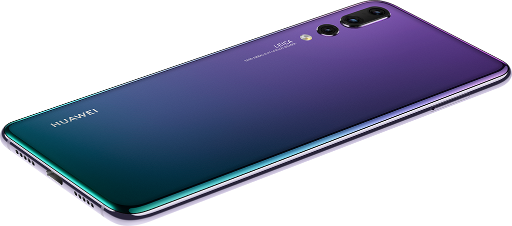
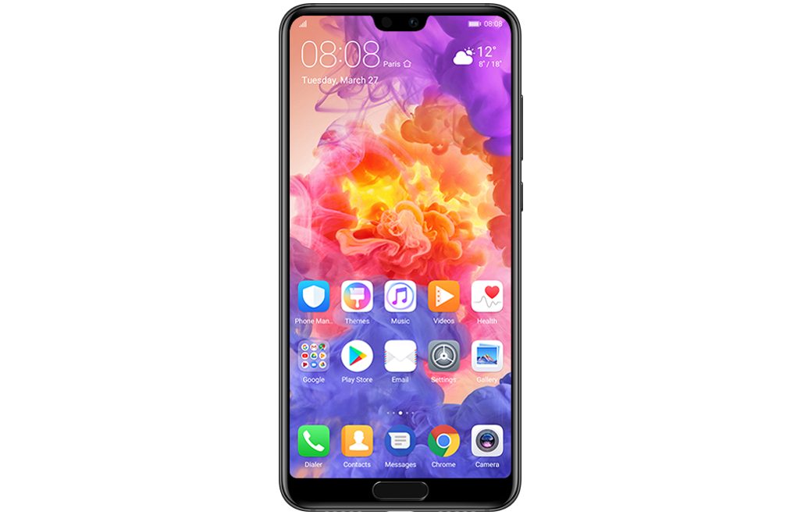
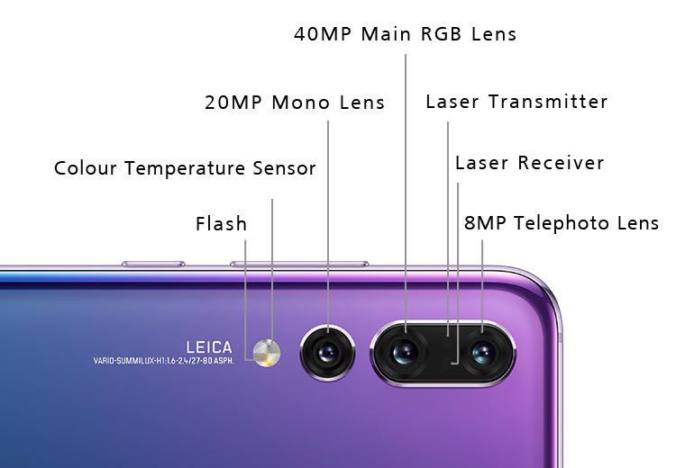
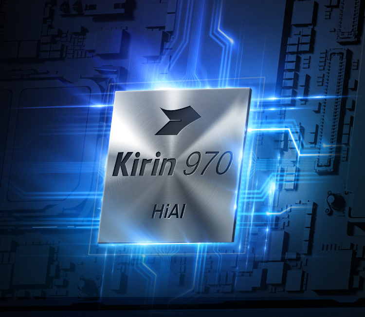

HUAWEI P20 Pro viedtālruņi var lepoties ar pakāpeniski pārejošas krāsas korpusu*, kuram iedvesma gūtu no gaismas enerģijas. Esam radījuši mirdzošu krāsu pāreju, kas nav sastopama nevienā citā viedtālrunī. Izcili veidots ikvienā aspektā.

Jaunais HUAWEI FullView displejs
Atklājiet nākamās paaudzes ekrānu tehnoloģijas iespējas, ko sniedz pilnīgi jaunais HUAWEI FullView 6,1 collas* OLED displejs, kurā attēli atdzīvojas ar izcilu krāsu gammu. Pirkstu nospieduma sensors bez malām un ar viedās navigācijas funkciju virtuālās joslas vietā ļauj iegūt papildu informatīvo zonu.

Leica trīskāršā kamera
Iepazīstiet pasaulē pirmo Leica trīskāršo kameru. HUAWEI P20 Pro paplašina radošās mobilās fotogrāfijas apvāršņus. Gaismas kustības iedvesmota, rūpīgi izstrādātā tehnoloģija ļauj uzņemt detalizētus, bagātīgus un dabiskus attēlus, vai tā būtu diena vai nakts.

Kirin 970 ar iebūvēto NPU
HUAWEI P20 Pro mākslīgā intelekta fotografēšanas sistēma izmanto čipkopas Kirin 970 sniegtās iespējas, tostarp virkni jaunu, lielisku iespēju un radošu rīku, lai viedtālruņa izmantošana būtu nevainojama.

Vairāk jaudas, ilgāka darbība
HUAWEI P20 Pro ir aprīkots ar īpaši jaudīgu akumulatoru, kurš ir droši un ātri uzlādējams, bet darbojas daudz ilgāk. HUAWEI SuperCharge* tehnoloģija ļauj ātri uzlādēt ietilpīgo 4000 mAh** akumulatoru, lai viedtālruņa lietošana būtu maksimāli ērta.